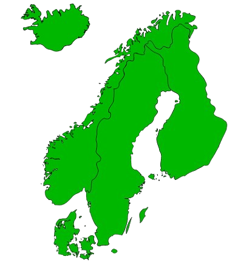
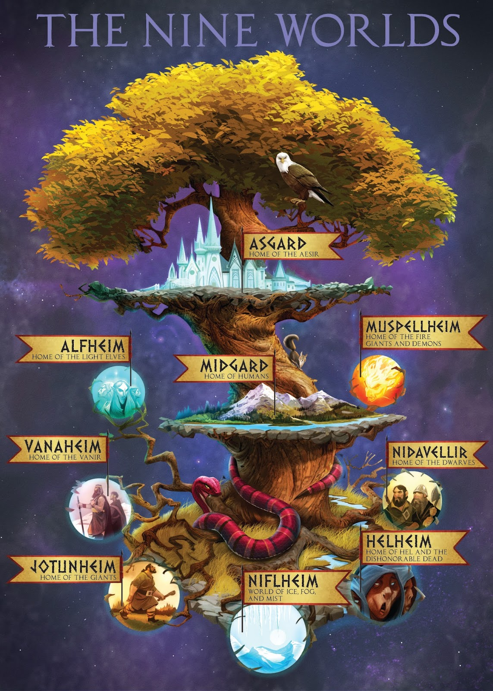
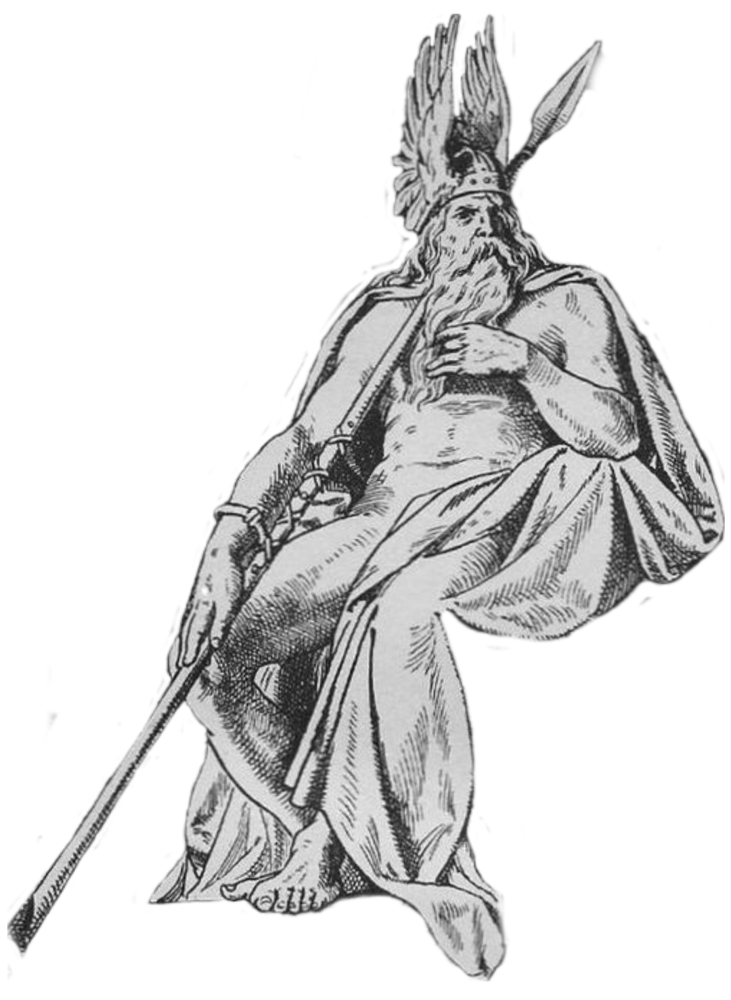

Norse mythology encompasses the body of beliefs, tales, and legends of the Germanic peoples of Scandinavia (present-day Norway, Sweden, and Denmark) during the Viking Age. Its popularity is not linked to politics; rather, it stems from famous stories inspired by the mythology itself.
Kingdoms

Asgard: the home of the warrior gods (Aesir).
Vanaheim: the home of the gods of nature and fertility (Vanir).
Alfheim: the realm of the light (or luminous) elves.
Midgard: the world inhabited by humans.
Jotunheim: the home and stronghold of the Giants (Jötnar).
Muspelheim: the realm of primordial fire and fire giants.
Svartalfheim: the kingdom of the dark elves (or dwarves).
Nidavellir: the underground kingdom of the dwarves, famous for their skill at the
forge.
Niflheim: the primordial land of eternal ice, home to Helheim (the world of the dead
ruled by the goddess Hel).
Deities and races
Æsir: the family of gods focused on war, wisdom, and governance. Odin is the All-Father
and the principal god; his son Thor is the god of thunder and strength. Other notable figures include
Tyr and Heimdall.
Vanir: the family of gods associated with nature, the weather, and prosperity.
Prominent among them are Freyr, Freyja (goddess of love and magic), and their father, Njord.
Gigants (Jötnar): ancient adversaries of the gods, yet also sharing ties of blood and
marriage with them.
Other beings: dwarves (master craftsmen), elves (magical beings), and monsters such as
the serpent Jörmungandr and the wolf Fenrir.
Gods and giants with god-like “offices"

Odin: supreme god of Norse mythology and ruler of Asgard, known as the god of wisdom,
war, and poetry.
Loki: part giant, part god of trickery, fire, and transformation
Frigg: principal goddess of the Norse pantheon (Aesir dynasty), queen of Asgard, and
wife of the supreme god Odin. Known as the mother goddess, she is the patroness of marriage, motherhood,
love, and domestic fertility. (she is a giantess whose actual name is Gunnlod.)
Hel: sovereign goddess of the realm of the dead (Helheim), destined for those who die
of old age or illness (she is only one-quarter goddess)
Thor: god of thunder, storms, strength, and agriculture
Bragi: god of poetry, music, and eloquence (demigod)
Tyr: Aesir god of combat, justice, oaths, and honor (demigod)
Njord: Vanir god of the seas, winds, fertility, and wealth
Freyr: deity of the Vanir clan, lord of fertility, peace, agriculture, and good
harvests
Skadi: goddess of winter, the mountains, the hunt, and skis (a giant known as a Jötunn)
Forseti: god of justice, mediation, and reconciliation
Balder: god of light, justice, joy, and wisdom (demigod)
Freya: goddess of love, beauty, fertility, magic, and war
How this reaches us
This mythology has reached us precisely through series, films, books, and works in general—not for political reasons. Contributing works include, for example, the books of J.R.R. Tolkien—such as The Hobbit and The Lord of the Rings—as well as Marvel Comics, written by Stan Lee, featuring the famous superhero Thor. Other famous, yet less obvious, names include Harry Potter, How to Train Your Dragon, The Lord of Rings, etc.